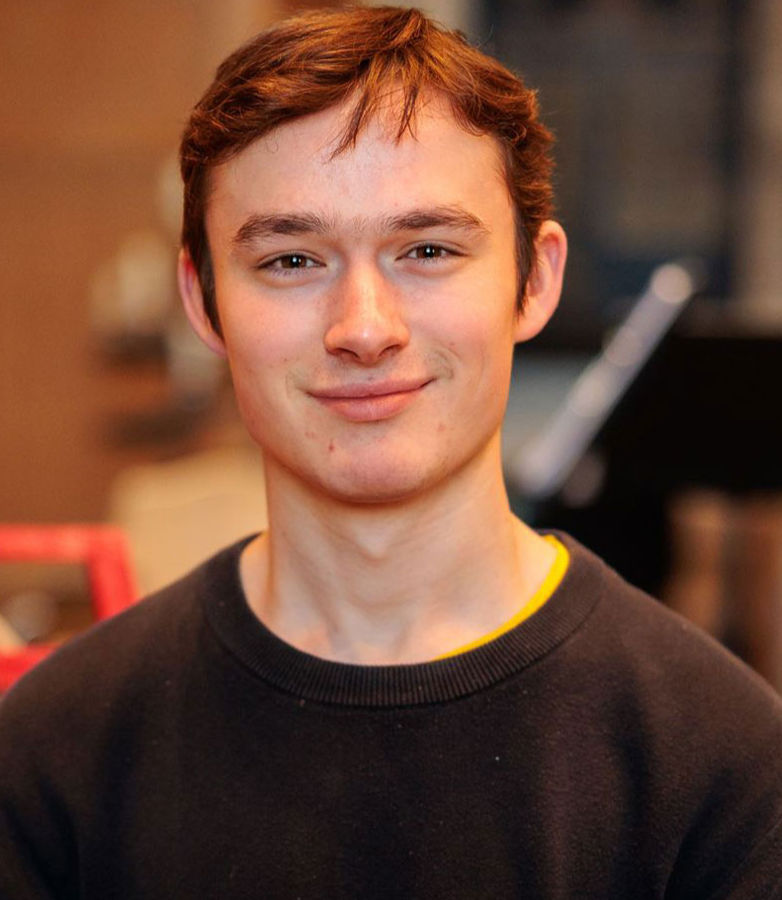

Composer, Pianist & Teacher

Edward Tait is a British composer, studying at the Royal Academy of Music, with Gareth Moorcraft and Louise Drewett. His music has been performed across the United Kingdom, Ireland and the United States, at venues including the Royal Festival Hall, St John’s Smith Square and Westminster Abbey. He has also received performances by renowned ensembles like the London Sinfonietta, Carducci Quartet, Orion Orchestra and Lloyd’s Choir, and he won the BBC/NCEM Young Composer Award in 2026.
Edward is the artistic director of the MetroLand Music Festival, and he is currently composing a song cycle, based on original texts by Mollie Mardel.
Download CVEdward’s cello octet Ecstasio, performed in a workshop by the Royal Academy of Music.
Premiere of Fleeting Manhattan at St John’s Smith Square, conducted by Nicholas Daniel.
26 June 2026 • St Saviour's Church, Pimlico
Programme of Liszt, Ravel, Schumann, Tait, Brahms & Scriabin
8 July 2026 • Constance Pilkington Hall, Purcell School of Music
11 July 2026 • Murray Edwards College, University of Cambridge
24 July 2026 • Guildhall School of Music & Drama, London
18 August 2026 • Christ Church, Worthing
2 October 2026 • United Reformed Church, Potter's Bar
23 October 2026 • St Alkmund's Church, Whitchurch
27 October 2026 • Royal Birmingham Conservatoire
For commissions, collaborations, performance enquiries, or to purchase scores:
YouTube: @edwardtait-06
SoundCloud: edward-tait-composing
Instagram: @ta.ity06
Facebook: Edward Tait